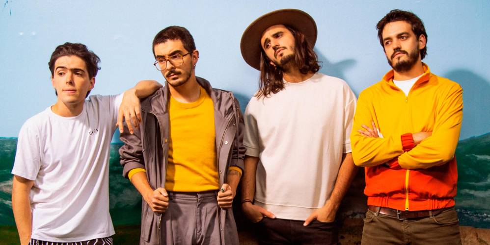

Una de las bandas con mayor proyección de América Latina le habla a una generación con ansiedades y problemas que, a menudo, vive en un contexto de gran agitación social.
El momento decisivo para una de las bandas de más rápido crecimiento en América Latina llegó gracias a un instrumento poco probable: un banjo robado.
Musicalmente, la banda es un poco atípica en un ambiente donde el reguetón recibe la mayor atención. Las influencias de Morat incluyen Coldplay, Bacilos, Mac Miller, el poeta y cantante español Joaquín Sabina, Dave Matthews Band, la banda de rock colombiana Ekhymosis y, por supuesto, los Beatles. Villamil e Isaza también son fanáticos del country (escriben y graban a menudo en Nashville), y los hermanos Vargas eran metaleros antes de incursionar en el folk-rock.
MORAT COMENZÓ cuando tocaban en la escuela primaria; sus miembros se conocen desde los cinco años. A medida que se acercaban al final de la escuela secundaria, Isaza, Villamil, Simón Vargas y Alejandro Posada, el baterista original del grupo, formaron una banda. Después del lanzamiento de su primer álbum en 2016, Posada se salió para concentrarse en sus estudios y el hermano menor de Vargas se incorporó.